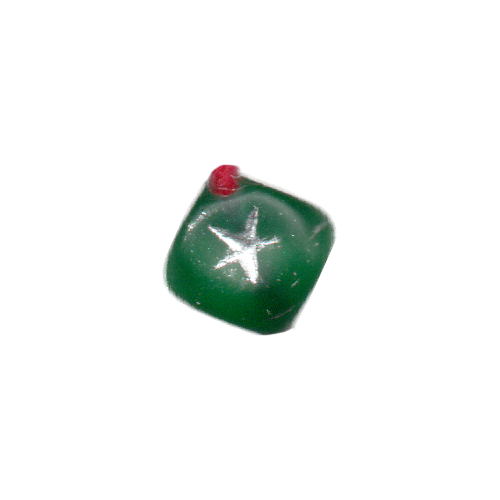
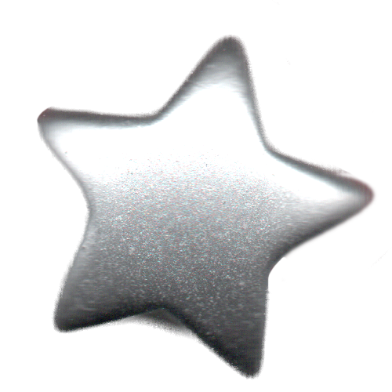

<!DOCTYPE html>
<html lang="kr"></html>
<head>
  <meta charset="UTF-8">
  <meta http-equiv="X-UA-compitable" content="IE-edge">
  <meta name="viewport" content="width=device-width", initial-scale="1.0">
  <title>d</title>
  <link href="d.css" rel="stylesheet">
  <script type="text/javascript">
    document.oncontextmenu = function(){return false;}
    function redirectToRandomPage() { 
            // Array of specific pages on the website 
            const pages = [ 
                'index.html', 
                'index8.html', 
                'index15.html', 
                'index22.html' 
            ]; 
            // Generate a random index 
            const randomIndex = Math.floor(Math.random() * pages.length); 
            // Redirect to the randomly selected page 
            window.location.href = pages[randomIndex]; 
    }
  </script>
</head>
<body oncontextmenu="return false" onselectstart="return false" ondragstart="return false" onkeydown="return false">
  <div class="box-container">
      <div class="box-item1">
        <div class="map">
          <a onclick="redirectToRandomPage()">
            
          </a>
          <p style="color: white;">픽션 속 사이보그적 여성</p>
          <div class="comment">
            <p style="color: white;">사이보그와 같이 존재만으로 어떤 경계를 흐리는 여성들이 있다. 다양한 모습으로 나타난 픽션 속의 사이보그 여성들을 소개한다. </p>
          </div>
      </div>
    </div>
    <div class="box-item2">
      <div class="contents">
        
        <p class="name">&lt;공각기동대&gt;(1995) - 쿠사나기 모토코</p>
        <p class="text">‘기업의 네트워크가 별을 뒤덮고 전자와 빛이 온 누리를 누비지만 국가나 민족이 무의미해질 정도까지는 정보화되어 있지 않은 가까운 미래’ - &lt;공각기동대&gt;(1995) 中
        <br><br>&lt;공각기동대&gt;의 주인공 쿠사나기 모토코는 대뇌의 일부와 척수를 제외한 대부분의 육체가 의체화된 사이보그 여성이다. 쿠사나기는 인간과 기계의 경계 위에 놓인 인물로서 정체성의 혼란을 겪고 갈등한다. &lt;공각기동대&gt; 속 공간에 벽화처럼 새겨진 인간의 진화 과정은 사이보그가 인간의 진화 선상에 놓여있는 포스트휴먼적 존재라는 것을 일깨워 준다. 포스트휴먼에 대한 관점을 제시하는 포스트휴머니즘은 트랜스휴머니즘(transhumanism)과 비판적 포스트휴머니즘(Critical Posthumanism)으로 나뉜다. 과학 기술을 통한 인간 한계 초월을 추구하는 트랜스휴머니즘은 탈-신체를 꿈꾸기에 기존의 신체를 긍정하지 않는 방향으로 나아간다. 반면 비판적 포스트휴머니즘은 인간과 비인간의 경계를 재정의하며 포스트휴먼을 자신의 몸을 스스로 만들어나가는 주체로 본다.
        <br>쿠사나기의 존재는 기계화된 몸을 지닌 여성 주체로서 신체와 젠더의 문제 또한 함께 제기한다. 줄리아 크리스테바가 제안한 개념 ‘아브젝시옹(abjection)’은 비천한 것, 불결한 것으로 여겨지는 타자화된 이질적 집단 ‘아브젝트(abject)’에 대한 심리적인 거부 반응을 뜻한다. 아브젝트로는 몸 밖으로 나온 체액인 월경혈 또는 출산시 나오는 불순물을 들 수 있으며 우리는 상징계에 들어서 주체를 형성하기 위해 이들 아브젝트적 이미지를 밀어낸다. 이와 같은 관점에서 아브젝시옹은 어머니의 몸-여성의 몸을 타자화하는 기제로서 작동한다. 쿠사나기는 작중에서 자신이 월경중이라는 것을 언급하는데, 이는 &lt;공각기동대&gt;의 포스트휴머니즘 담론이 성차를 긍정하는 방향으로 나아갔으며 여성으로서의 아브젝트를 극복 대상으로 보지 않았다는 것을 의미한다.</p>
        
        <p class="name">&lt;소녀혁명 우테나&gt; - 텐죠 우테나</p>
        <p class="text">&lt;소녀혁명 우테나&gt;의 주인공 텐죠 우테나는 오오토리 학원이라는 가부장제 사회를 개혁하고자 하는 페미니즘 전사로서, 가부장제를 내면화한 여성 히메미야 안시를 남성중심적 사회 시스템으로부터 해방시키기 위해 투쟁한다. 그러나 우테나가 시도한 혁명은 실패하고 만다. 이는 우테나가 젠더 이분법에 국한된 방식, 즉 왕자가 되어 공주를 구하는 방식으로 혁명을 이루려 했기 때문이다. 남성과 여성의 자리를 바꿀 뿐인 전략은 기존의 권력 구조를 그대로 재생산할 뿐이었다. 그러나 우테나의 혁명은 무의미하지 않았다. ‘세계’의 혁명은 실패로 끝났지만, 안시의 ‘마음’에 대한 혁명은 성공했기에. 자신을 구하려는 우테나의 노력에 영향을 받은 안시는 곧 주체성을 회복하고 ‘왕자-공주’라는 우테나가 극복하지 못한 가부장적 시스템에서 빠져나간다.
        <br>도나 해러웨이는 ‘실뜨기(string figure)’ 행위를 테크노사이언스 시대의 페미니즘 정치로서 설명했다. 실뜨기는 둘 이상의 사람이 실을 주고받으며 계속적으로 다양한 패턴을 구성해가는 행위이다. 해러웨이에 따르면, 우리는 실뜨기를 통해 서로의 몸을 구성할 수 있고 정체성을 초월하는 연대가 가능하다. &lt;소녀혁명 우테나&gt;에서 우테나와 안시는 해러웨이의 실뜨기 놀이를 하고 있었다. 우테나는 안시에게 ‘마음의 혁명’이라는 실을 넘겼고, 안시는 우테나에게 ‘시스템에 대한 거부’라는 새로운 모양의 실을 건네주었다.</p>
        
        <p class="name">&laquo;이갈리아의 딸들&raquo; - 페트로니우스 브램</p>
        <p class="text">이갈리아의 딸들의 세계관에서 남성과 여성의 사회적 역할은 현실과 반대된다. 여성이 가장의 역할을 수행하고, 남성은 집에서 아이들을 돌본다. 상대적으로 육체가 강한 남성의 신체적 조건은 열등한 것으로 여겨지며 임신과 출산이 가능한 여성의 능력은 추앙받는다.
        <br>이 소설의 주인공 페트로니우스 브램은 어느 장관(당연히 여성이다) 집의 아들이다. 그는 페호(남성의 성기를 부각시키는 보호대)를 찰 나이가 된, 언젠가 멋진 여성에게 선택받길 원하는 지극히 평범한 소년이다. 그리고 그는 우리 주위의 지극히 평범한 소녀들과 겹쳐 보인다.
        <br>작중에서 페트로니우스는 분명한 ‘남성’이지만 독자는 그를 관념적 ‘여성’으로 읽는다. 그렇다면 그는 여성일까, 남성일까? 해러웨이는 사이보그 선언문에서 “여성’됨’과 같은 상태는 없다. 됨 그 자체가 성과 관련된 과학 담론 및 사회적 관습의 경합을 통해 구성된 매우 복합적인 범주다.” 라고 이야기했다.
        <br>그는 생물학적으로 남성이라고 할 수 있지만, 그것도 ‘성과 관련된 과학 담론’으로부터 비롯된 것이다. 그는 소설 밖 세계관에서 사회적 여성이라고 할 수 있지만, 그것 역시 사회적 관습과 역사를 통해 구성된 범주 내의 이야기다. 따라서 그가 여성인지 남성인지는 사실 중요하지 않다. 이제 페미니즘에서 무엇을 ‘우리’라고 할 수 있는지 생각해봐야만 한다.</p>
        
        <p class="name">&laquo;채식주의자&raquo; - 김영혜</p>
        <p class="text">김영혜는 평범했던 주부로 살아가다, 어느 날 피와 고기로 뒤덮인 끔찍한 꿈을 반복해서 꾼 뒤 갑자기 고기와 모든 동물성 음식을 거부하고 채식을 선언하는 것으로 1부가 시작된다. 남편과 가족들은 이런 영혜의 변화를 이해하지 못하고, 억지로 음식을 먹이려 하며, 극단적으로는 아버지가 영혜의 입에 고기를 밀어 넣으려다 그녀가 가족들 앞에서 손목을 긋는 자해에 이르는 등 가족 내 갈등이 폭발하게 된다.2부는 영혜의 형부의 시선에서 전개된다. 형부는 우연히 영혜의 몸에 몽고반점이 남아 있다는 것을 알고, 강렬한 예술적, 성적 욕망을 느낀다. 그 결과 영혜는 꽃이 그려진 몸으로 형부와 예술 작업에 참여하게 되고, 두 사람은 육체적으로도 관계를 맺게 된다. 이 사건으로 영혜의 언니 인혜 가족은 파탄의 위기를 맞으며, 영혜 역시 사회적 틀에서 더 멀어진다.
        <br>3부는 언니 인혜의 시선으로, 영혜는 점점 음식 자체를 거부하며 자신이 식물로 변한다고 믿는 단계에 도달합니다. 점점 쇠약해진 영혜는 정신 병원에 입원하며, ‘자신은 더 이상 인간이 아니라 나무’라고 주장한다. 언니 인혜는 무너져가는 가족과 자신의 삶을 돌아보면서도, 끝내 영혜의 선택과 내면을 완전히 이해하지 못한 채 소설은 열린 결말로 마무리된다.
        <br>김영혜라는 인물은 소설 전반에 걸쳐 무난하고 순응적이던 삶에서 벗어나, 자신만의 방식(채식, 자기 해방 혹은 자기 소멸)을 고통스럽고도 단호하게 밀고 나가는 인물이다. 영혜의 변화는 단순한 식습관 변화가 아닌, 내면에 쌓인 억압과 폭력, 본성에 대한 반항, 사회적 규범으로부터의 해방 의지를 극단적으로 보여주는 행위로 그려진다. 이러한 김영혜의 변화는 가족들을 비롯한 주변 인물에게도 치명적인 영향을 끼치며, 영혜는 끝내 ‘나는 나무가 되겠다’는 선언과 함께 존재의 경계 자체를 무너뜨린다.</p>
      </div>
    </div>
    <div class="box-item3">
      <a href="f.html">
        </a>
        <span class="text1">f. 현실과 픽션<br>엮기</span>
      <a href="h.html">
        </a>
        <span class="text2">h. 논문 발췌</span>
      <a href="n.html">
        </a>
        <span class="text3">n. 역사 속<br>사이보그적 여성</span>
      <a href="q.html">
        </a>
        <span class="text4">q. 경계 위에<br>놓인 존재</span>
    </div>
  </div>
</body>